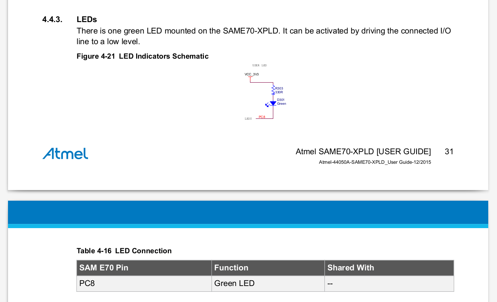
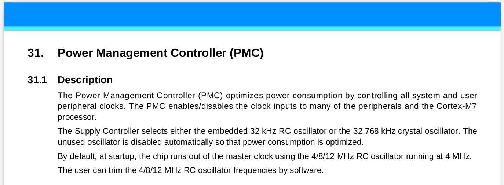
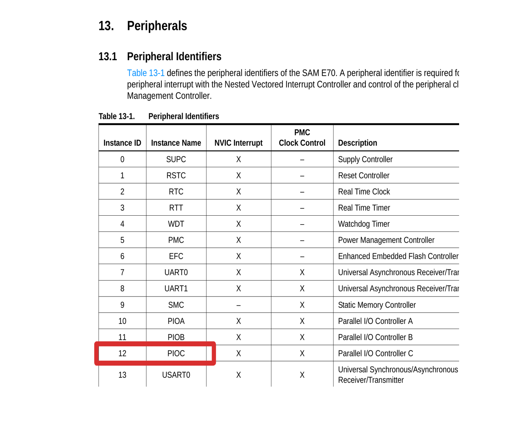

O objetivo final desse laboratório é o de aprendermos a controlar de forma elementar os pinos digitais do microcontrolador a fim de podermos acionar saídas (LEDs/ Buzzers/ motores) e lermos entradas (botões/ ...) digitais simples.
Entrega¶
| Pasta |
|---|
Labs/PIO-IO |
- Ao final da aula:
- Um LED piscando a cada segundo
- A leitura de um botão (entrada)
- LED acionado pelo botão
- APS:
- Um sistema embarcado que reproduz uma música monofonia
Note
A entrega FINAL pode ser feita em dupla, a de aula deve ser individual.
Laboratório¶
Nessa aula iremos utilizar um projeto de referência SAME70-examples/SAME70-Clear que foi criado para ser o mais “clean” possível, inclusive, faltando algumas bibliotecas (ASF) básicas para a compilação. Para executarmos esse lab, seguiremos os seguintes passos:
Parte 1: 1. Inserir drivers no projeto (ASF) 1. Configurações básicas do uC (clock e WDT) 1. Configurar PIO para controlar pino do LED em modo saída 1. Acionar o pino
Parte 2: 1. Configurar o PIO para controlar o pino do botão em modo entrada 1. Ler o botão e agir sobre o LED
Inicializando/ ASF¶
Copie o projeto SAME70-examples/SAME70-Clear para seu repositório na pasta correta e abra o projeto no AtmelStudio verificando o conteúdo do arquivo main.c o mesmo deve estar praticamente vazio salvo comentários, inclusão do arquivo asf.h e duas função init e main:
#include "asf.h" // CÓDIGO OMITIDO // Função de inicialização do uC void init(void) { } /************************************************************************/ /* Main */ /************************************************************************/ // Funcao principal chamada na inicalizacao do uC. int main(void) { init(); // super loop // aplicacoes embarcadas não devem sair do while(1). while (1) { } return 0; }
O arquivo do tipo header asf.h é criado e atualizado dinamicamente pelo AtmelStudio e contém os frameworks/drivers inseridos no projeto. O Atmel Software Framework (ASF) é uma camada de abstração do acesso ao hardware, possibilitando que configuremos partes específicas do uC em um nível de abstração intermediário.

A função init será utilizada para inserirmos códigos que farão a inicialização do uC e configuração correta dos periféricos e pinos. Já a função main é a primeira função a ser executada no uC (devido a linguagem C) e será a orquestradora de todo o sistema, como ilustrado a seguir:
main.c
main(){
// inicializacão
init(){
// inicialização CLK
// inicialização PMC
// inicialização PIO
}
while(1){
// Lógica
}
}
Incluindo dependências no ASF¶
- Existe uma etapa do projeto que é definir o que será necessário, e então incluir as dependências. Como esse é o primeiro lab de vocês já estamos dando o que será necessário inserir.
No AtmelStudio abra o ASF Wizard clicando na barra superior em: ASF -> ASF Wizard. Após um tempo (sim demora para abrir) uma janela contendo: a esquerda uma lista dos possíveis drivers que podem ser utilizados para o microcontrolador escolhido e na coluna da direita os drivers/bibliotecas já inseridas na solução.
As seguintes bibliotecas já estão selecionadas e incluídas no projeto:
- Generic board support (driver)
- drivers de compilação para o uC da placa
- System Clock Control (service)
- funções para controle do clock do uC
Será necessário adicionar as seguintes bibliotecas (APIs/ drivers) a esse projeto:
- GPIO - General purpose Input/OutPut (service)
- funções para configuração do PIO
- IOPORT - General purpose I/O service (service)
- funções para controle dos pinos
- MPU - Memory Protect Unit (driver)
- funções para gerenciamento de memória
- PMC - Power Management Controller (driver)
- funções para configuração do periférico PMC e controle de clock dos periféricos
- PIO - Parallel Input/Output Controller (driver)
- funções para controle do periférico PIO e controle dos pinos
- Delay routines
- funções de delay (por software)
Para adicionar ou remover bibliotecas da solução utilize a barra inferior:

Ao final clique em APPLY para salvar as alterações.
Inicialização do uC¶
Antes da execução de qualquer firmware é necessário realizarmos configurações no uC que podem ir de configuração: pino/ inicialização de memória/ configuração de clock/ periféricos de comunicação/ .... No nosso caso iremos começar configurando o clock do uC e desativando o WatchDog Timer.
Modifique main.c
Modifique a função init() incluindo as seguintes linhas de código.
// Função de inicialização do uC void init(void){ // Initialize the board clock sysclk_init(); // Desativa WatchDog Timer WDT->WDT_MR = WDT_MR_WDDIS; }
A função sysclk_init() é responsável por aplicar as configurações do arquivo config/conf_clock.h no gerenciador de clock do microcontrolador (esse é o mesmo arquivo que foi modificado na primeira aula), que inicializa o Clock do sistema em 300 MHz.
Já a linha WDT->WDT_MR = WDT_MR_MDDIS faz com que o watchdog do microcontrolador seja desligado.
Info
WatchDog Timer como o próprio nome diz é um cão de guarda do microcontrolador. Ele é responsável por verificar se o código está 'travado** em alguma parte, causando o reset forçado do uC.

Configurando um pino como saída¶
Para configurarmos um pino como saída será necessário seguirmos os passos a seguir:
- Identificar o pino a ser controlado (extrair dados do manual/ placa/ projeto)
- Exportar para o código informações do pino
- Ativar o periférico (PIO) responsável pelo pino
- Configurar o PIO para controlar o pino como saída
- Controlar o pino (high/low).
Dados do pino¶
Antes de configurarmos um pino como entrada (botão) ou saída (LED) é necessário descobrimos qual pino iremos controlar, para isso devemos verificar o manual da placa (manuais/SAME70-XPLD.pdf) para saber quais pinos possuímos disponíveis para uso. No caso da nossa placa, possuímos um pino conectado a um botão e outro pino conectado ao LED (já vieram montados na placa).

Todos os pinos digitais desse microcontrolador (em outros uC pode ser diferente) são conectados ao um periférico chamado de Parallel Input/Output Controller (PIO), esse periférico é responsável por configurar diversas propriedades desses pino, inclusive se será entrada ou saída (configurado individualmente). Cada PIO pode controlar até 32 pinos (depois veremos o porque disso), e cada PINO está conectado a um único PIO.
Cada PIO possui um nome referenciado por uma letra: PIO**A** ; PIO**B**; PIO**C**;.... E cada pino possui um número único dentro desse PIO, por exemplo PIOA11 referencia o "pino 11" do "PIOA". Outra notação utilizada no manual é PA11, que representa a mesma coisa.
Responda
Vá até a secção 4.4.3 LED do SAME70-XPLD leia sobre o LED encontrado no kit de desenvolvimento e responda:
- Como o LED é ativado ?
- Se colocarmos 0 no pino conectado ao LED, ele irá acender ou apagar ?

A tabela Table 4-16 LED Connection descreve em qual pino e qual PIO será o responsável pelo controle do LED, podemos a partir do dado (escrito no manual) que o LED foi conectado ao pino PC8 do microcontrolador extrair as seguintes informações:
Info
O periférico PIO C (existem nesse uC 5 PIOs, cada um controla até 32 pinos) “pino/bit/índice” 8 é responsável por controlar o Liga/Desliga do LED verde da placa.
Conforme sintetizado na tabela a seguir:
| SAME70-XPLD | PIO | Index | ID_PIO |
|---|---|---|---|
| LED | PIOC | 8 | 12 |
Modifique main.c
Iremos incorporar essa informação no nosso código via os #defines no começo do main.c:
#include "asf.h" + #define LED_PIO PIOC // periferico que controla o LED + #define LED_PIO_ID 12 // ID do periférico PIOC (controla LED) + #define LED_PIO_IDX 8u // ID do LED no PIO + #define LED_PIO_IDX_MASK (1u << LED_PIO_IDX) // Mascara para CONTROLARMOS o LED
Linguagem C - #defines
defines em C são macros resolvidos em tempo de compilação
PMC¶
Antes de podemos configurar um PIO para controlar um pino é necessário ativarmos esse periférico. A maioria dos periféricos do SAME70 inicializam desligados, isso é feito para: diminuir o gasto energético; impedir um periférico que não foi configurado que execute.
Info
O Power Managament Controller (PMC) é o periférico responsável por "ligar/desligar" os demais periféricos, isso é feito via a liberação ou não do clock para os periféricos. O PMC possui também diversas outras funcionalidades, como descrito no manual do microcontrolador (SAME70 Datasheet):

Cada periférico do uC possui um ID de identificação (sec 13 SAME70 Datasheet) que é utilizado em duas situações: Para indicar ao PMC e ao NVIC (veremos futuramente) qual periférico estamos nos referindo. A seguir uma parte dessa tabela extraída do datasheet.

 Note pela tabela que o PIOC (aquele que irá controlar o LED) possui ID 12, como já inserido nos #defines do nosso
Note pela tabela que o PIOC (aquele que irá controlar o LED) possui ID 12, como já inserido nos #defines do nosso main.c:
#define LED_PIO_ID 12 // ID do periférico PIOC (controla LED)
O PMC possui diversas funções, estamos agora interessado naquela que ativa um periférico para podermos usar. Essa função é a pmc_enable_periph_clk(uint32_t ul_id) que recebe como parâmetro o ID do periférico que queremos ativar.
Modifique main.c
Insira o seguinte trecho de código na nossa função de inicialização (init()) logo após desativarmos o WDT:
// Ativa o PIO na qual o LED foi conectado // para que possamos controlar o LED. pmc_enable_periph_clk(LED_PIO_ID);
note que estamos usando o define: LED_PIO_ID que foi inserindo no código por vocês.
Configurando o PIOC¶
Todo pino no PIO é inicializado em modo entrada, para usarmos como saída será necessário indicarmos ao PIO. Para isso, usaremos a seguinte função pio_set_output(...), definida no ASF do SAME70.
Modifique
Inseria a seguinte chamada de função na inicialização. Isso configura o PIOC para tratar o bit 8 (index 8) como saída.
//Inicializa PC8 como saída pio_set_output(LED_PIO, LED_PIO_IDX_MASK, 0, 0, 0);
Essa função configura o index 8 (LED_PIO_IDX) do PIOC como sendo saída inicializada em '0', sem multidrive e sem resistor de pull-up.
Note que temos que usar o LED_PIO_IDX_MASK nesse caso, em em praticamente todos os outros. Veremos o porque disso no próximo laboratório.
A função pio_set_output() possui os seguintes parâmetros:
void pio_set_output ( Pio * p_pio, const uint32_t ul_mask, const uint32_t ul_default_level, const uint32_t ul_multidrive_enable, const uint32_t ul_pull_up_enable );
Sendo:
- p_pio Pointer to a PIO instance.
- ul_mask Bitmask indicating which pin(s) to configure.
- ul_default_level Default level on the pin(s).
- ul_multidrive_enable Indicates if the pin(s) shall be configured as open-drain.
- ul_pull_up_enable Indicates if the pin shall have its pull-up activated.
Modifique
Após todas as etapas anteriores sua função init() deve ficar como a seguir:
// Função de inicialização do uC void init(void){ // Initialize the board clock sysclk_init(); // Disativa WatchDog Timer WDT->WDT_MR = WDT_MR_WDDIS; // Ativa o PIO na qual o LED foi conectado // para que possamos controlar o LED. pmc_enable_periph_clk(LED_PIO_ID); //Inicializa PC8 como saída pio_set_output(LED_PIO, LED_PIO_IDX_MASK, 0, 0, 0); }
Interagindo com o LED¶
Uma vez que as configurações gerais do uC já foram realizadas (clock e WDT) e que o periférico PIO C já está pronto para acionar o LED (ou o que estiver conectado nele) podemos começar a fazer nossa implementação na função main. Duas são as funções que iremos usar para acionar ou limpar um determinado pino:
// coloca 1 no pino do LED. pio_set(PIOC, LED_PIO_IDX_MASK); // coloca 0 no pino do LED pio_clear(PIOC, LED_PIO_IDX_MASK);
Modifique
Modifique a função main para fazermos o LED piscar interruptamente (1 -> delay 200 ms -> 0 -> delay 200 ms -> ....):
// Funcao principal chamada na inicalizacao do uC. int main(void) { // inicializa sistema e IOs init(); // super loop // aplicacoes embarcadas não devem sair do while(1). while (1) { pio_set(PIOC, LED_PIO_IDX_MASK); // Coloca 1 no pino LED delay_ms(200); // Delay por software de 200 ms pio_clear(PIOC, LED_PIO_IDX_MASK); // Coloca 0 no pino do LED delay_ms(200); // Delay por software de 200 ms } return 0; }
Analogia ao Arduino
No arduino esse mesmo código seria escrito como:
// the setup function runs once when you press reset or power the board void setup() { // initialize digital pin LED_BUILTIN as an output. pinMode(LED_BUILTIN, OUTPUT); } // the loop function runs over and over again forever void loop() { digitalWrite(LED_BUILTIN, HIGH); // turn the LED on (HIGH is the voltage level) delay(1000); // wait for a second digitalWrite(LED_BUILTIN, LOW); // turn the LED off by making the voltage LOW delay(1000); // wait for a second }
O Arduino esconde a função main(), que seria:
void main(void){ init(); setup(); while(1){ loop(); } }
Note que a função setup() do arduino precede de uma oura função init() que possui funcionalidade parecidas com a nossa de inicializar o clock do sistema e desabilitar o WDT.
Entrada Digital¶
Para configurarmos um pino como entrada será necessário:
- Identificar o pino a ser controlado (extrair dados do manual)
- Exportar para o código informações do pino
- Ativar o periférico (PIO) responsável pelo pino
- Configurar o PIO para controlar o pino como entrada
- Ler o valor do pino.
Extraindo dados do manual¶
O kit de desenvolvimento SAME7-XPLD possui dois botões, um deles reservado para o reset do microcontrolador e outro de uso geral.
Utilizando o manual do kit de desenvolvimento (SAME70-XPLD.pdf) preencha a tabela a seguir:
Responda
Preencha a tabela a seguir:
| Perif. SAME70-XPLD | PIO(A,B,C,D,...) | INDEX | ID_PIO |
|---|---|---|---|
| Botão SW300 |
DICA: Ver novamente como com o LED.
Exportando informações para o código¶
Agora precisamos fazer a ponte entre o mundo externo e o firmware que será executado no microcontrolador, pela tabela anterior insira e complete os defines a seguir no main.c (perto dos defines do LED).
Modifique
Com a tabela preenchida, defina e inicialize novos defines para lidarmos com o botão, da mesma maneira que foi feito o LED:
// Configuracoes do botao #define BUT_PIO #define BUT_PIO_ID #define BUT_PIO_IDX #define BUT_PIO_IDX_MASK (1u << BUT_PIO_IDX)
Ativando o clock do PIO¶
Com os defines "definidos" podemos ativar o clock do PIO que gerencia o pino, para isso insira na função de inicialização init() após a inicialização do LED.
Modifique
Modifique a função init() inserindo a inicialização do novo PIO:
// Inicializa PIO do botao pmc_enable_periph_clk(BUT_PIO_ID);
Configurando o pino como Input¶
Agora é necessário configurarmos o BUT_PIO para gerenciar o BUT_PIO_IDX como uma entrada, para isso usaremos a função pio_set_input() definida na biblioteca da ASF:
// configura pino ligado ao botão como entrada com um pull-up. pio_set_input(XXXXX,YYYYY,ZZZZZ);
Leia
Descrição da função: pio_set_input()
ul_attribute
- Dica: no
ul_attributeutilize o seguinte define: PIO_DEFAULT.
pio_set_input(XXXXX,YYYYY,PIO_DEFAULT);
PULL-UP¶
Para esse pino funcionar é necessário que ativemos o pull-up nele. Pull-up é um resistor alimentando para VCC, ele faz com que o valor padrão do pino seja o energizado.
Para ativarmos o pull-up basta chamar a função: pio_pull_up(), detalhada na documentação do ASF.
Professor
Peça explicação ao Professor!
Lendo o botão¶
Para lermos um valor de um pino, que foi configurado como entrada devemos utilizar alguma das funções fornecidas no ASF de interface com o PIO, procure por ela na documentação:
Dicas
No próximo lab vamos entender como essas funções funcionam!
Implementando a lógica¶
Implementando
Agora que somos capazes de ler o estado de um pino, podemos implementar a lógica descrita anteriormente, onde o LED deve piscar 5 vezes somente quando o botão da placa for pressionado.
Terminou?¶
Muito bom! Agora que tal pegar a placa OLED1 (que você recebeu no kit) e usar os LEDs e Botoẽs dela?
Já da para começar a APS 1, que é para 15/3!